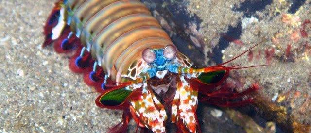

Fatos sobre o Stomatopoda
Informações Gerais
Odontodactylus scyllarus vive em tocas que constrói nos fundos dos corais, ou através de buracos deixados por outros animais, em rochas e substratos próximos de corais de recifes a cerca de 40 metros de profundidade.
Seus golpes

São capazes de desferir um dos mais rápidos e violentos golpes do reino animal, seu soco fora registrado com uma velocidade de 80 km/h e aceleração similar a uma arma calibre .22. A força do impacto do soco é de 60 kg/cm². Essa força esmagadora é a responsável pelo seu título de "lagosta-boxeadora" e é capaz de facilmente quebrar a carapaça de um caranguejo, as conchas duras e calcificadas de gastrópodes ou até mesmo quebrar o vidro reforçado de um aquário.
Seus olhos

Nossos olhos possuem três tipos desses receptores — que respondem à luz azul, verde e vermelha —, que nos permitem perceber o espectro de cores que vemos. Os cães contam com apenas dois tipos de cones (verde e azul), e é por isso que eles vêm tons de azul, verde e um pouco de amarelo. Já as borboletas, sortudas, possuem cinco tipos de cones, o que significa que elas conseguem enxergar cores que o nosso cérebro é incapaz de processar.
Contudo, as lagostas-boxeadoras são um crustáceo tão sensacional que elas não possuem dois, três ou cinco tipos de cones apenas. Elas contam com 16! Assim, o arco-íris que elas enxergam deve ser uma verdadeira explosão termonuclear de cores, luz e beleza. Mas, como a grande maioria das criaturas, esses animais também possuem um lado obscuro. No caso das tamarutacas, esse lado é negro e sanguinário.
Outras curiosidades

Seus membros são tão poderosos que os cientistas estão estudando a estrutura de suas células para desenvolver novas armaduras para as tropas de combate;
A Força Aérea norte-americana “encomendou” uma pesquisa para o desenvolvimento de aeronaves militares mais resistentes com base no revestimento das patas golpeadoras do mantis;
Existem estudos baseados na visão superpoderosa das tamarutacas para melhorar os componentes ópticos — como os dos leitores de CD e DVD, por exemplo — utilizados atualmente.